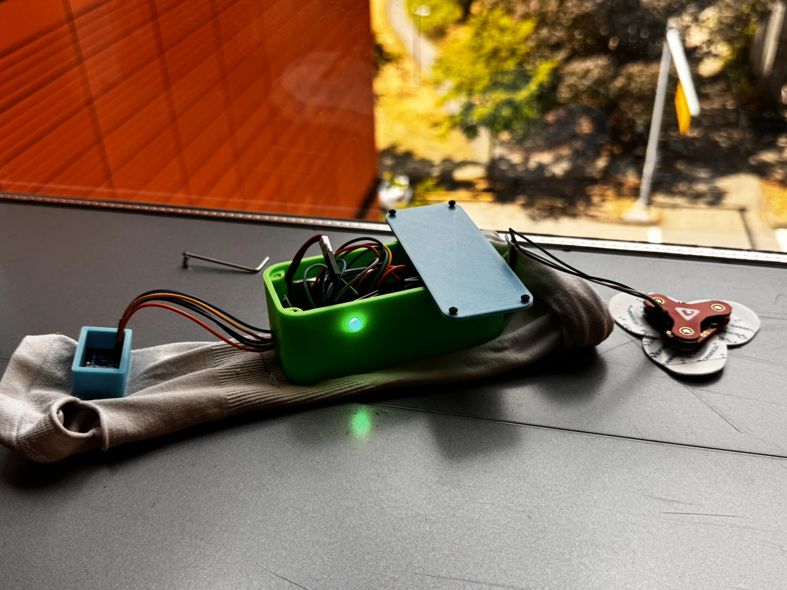
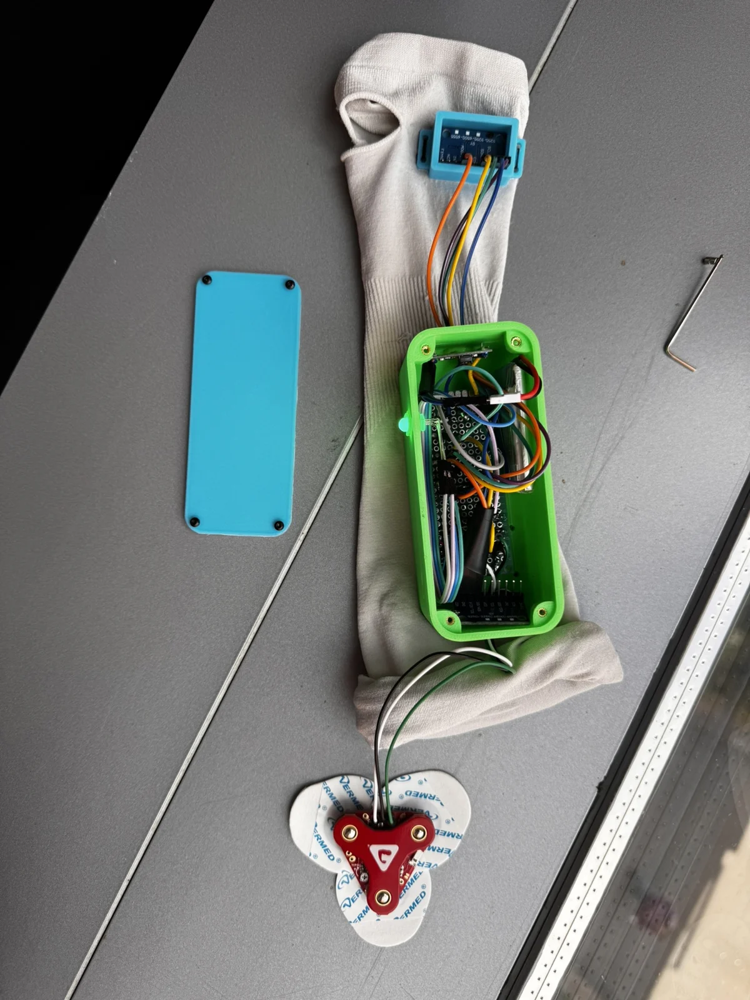

Selected projects
Built to learn.
Tested to understand.
A closer look at the hardware, my contribution and what each prototype taught us.


Research / UW HiPER
Wireless power on the move
Integrated a 6.78 MHz wireless power prototype through coil fabrication, characterization and motion-platform design. Power testing was a team effort.
Powered motion demonstrated; efficiency depended on receiver position.
Read case study →

Capstone / Purdue
Automated dry-ice delivery
Led a four-person team and designed the electronics and control firmware for a temperature-feedback dispensing system.
Full-scale prototype built; freezing and jamming limited sustained operation.
Read case study →

Capstone / University of Washington
Wrist-use feedback wearable
Led a four-person team, designed the enclosure and electrical architecture, and helped develop EMG and wrist-posture feedback.
Functioning prototype demonstrated; clinical effectiveness was not established.
Read case study →